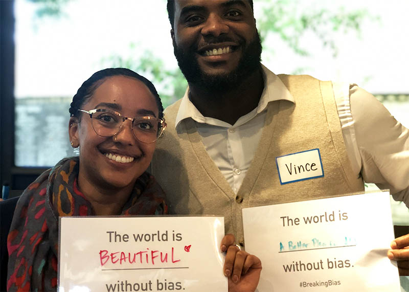
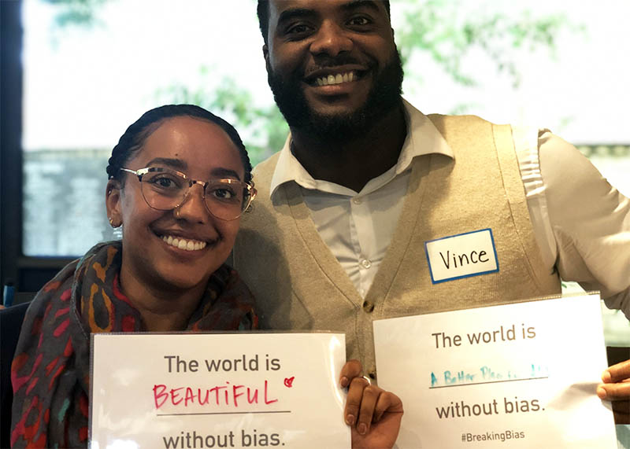

Breaking Bias
Unconscious Bias Training and Promoting Equality
BE MORE

Background
Despite best efforts and anti-discrimination policies, racial and gender inequalities persist, causing significant suffering and economic costs. The Kellogg Foundation estimates these inequalities cost the U.S. economy at least $2 trillion annually. Unconscious bias is the root cause, perpetuating harmful habits of thought that distort perception, reasoning, and decision-making.
Project Overview
During my time at BE MORE, I contributed to a series of initiatives aimed at breaking bias, funded by the National Science Foundation, our focus areas included:
Workshop Development: I led client-facing meetings to align requirements, prepared and implemented workshops, and ensured feedback and client satisfaction.
Technology Development: I contributed to research and development, gathering insights to enhance the product's market fit and inform the design of a technology solution to reduce unconscious bias.
 

Goals & Outcomes
Combat unconscious bias through proven tools and training.
Develop a technology solution to reduce bias.
Enhance market fit and product effectiveness through user-centered research.
Skills & Methods
User research and analysis | Workshop design and facilitation | Client management and communication | Technology development and iteration.
Impact
By addressing unconscious bias, we can create a more equitable society, reducing suffering and economic costs. This project showcases my ability to tackle complex social issues through design research and technology development.